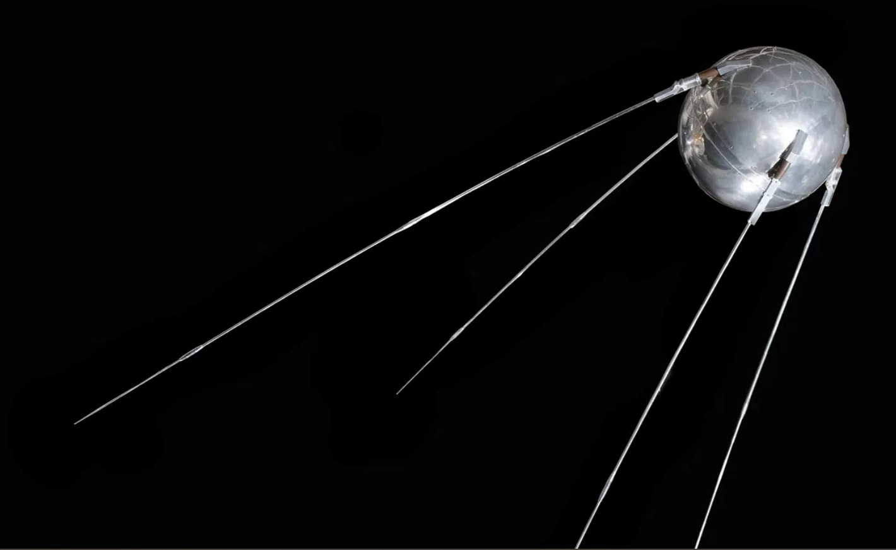

Sputnik was the first artifical satellite launched in 1957 by the Soviet Union. This initial project from the rivaling state at the time would push forward the initiative of American space projects, like NASA and DARPA, the latter formerly known as ARPA. ...FUN FACT
After the launch of Sputnik, for the first time ever, the US administration responded with the direct offering of federal funding in higher education known as the National Defense Education Act.